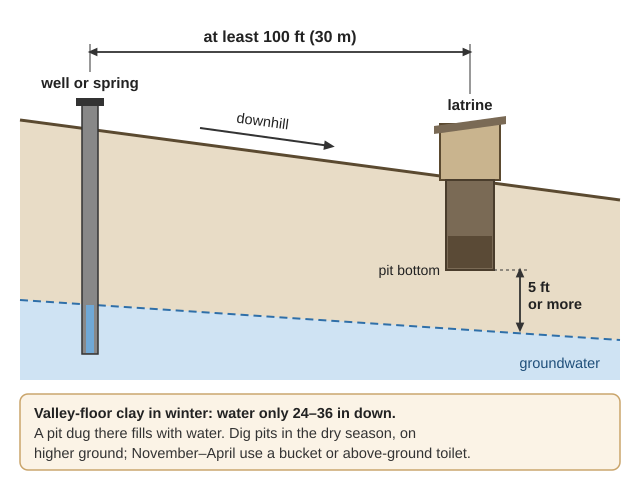
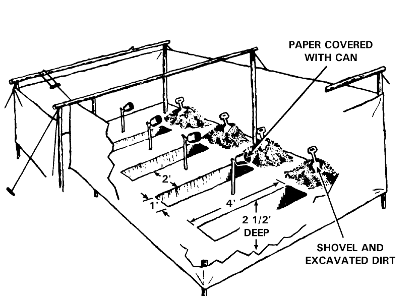
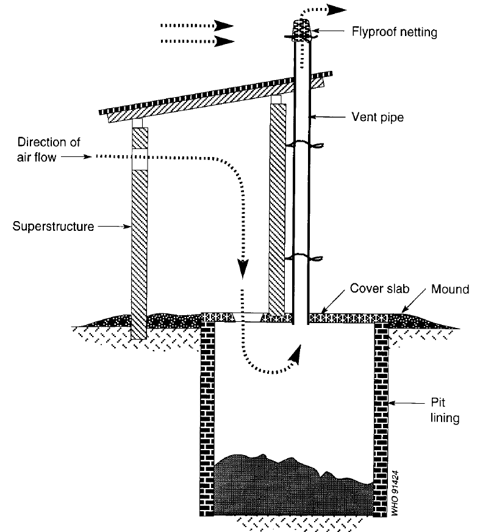
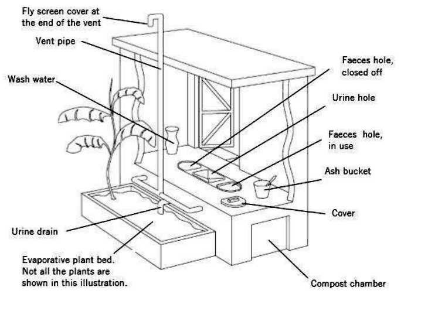
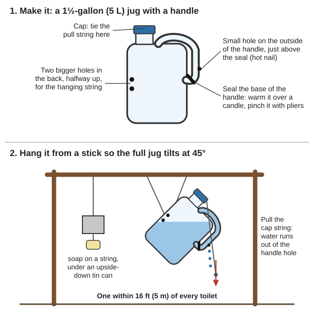

📘 Guides › 🩹 Health & medicine · 🆘 Emergency · 📇 Index A–Z · 💬 Ask
When sewers, pumps and power fail, cholera, dysentery, typhoid and hepatitis follow, and they all travel from human waste to someone's mouth. This guide covers toilets for every season in our clay soils, septic systems with no power, greywater, handwashing, keeping clean with little water, lice and scabies, stopping an outbreak, flies and mice, garbage with no pickup (sorting, pits, compost, bears, burning, hazardous waste), sickroom waste, dead animals, and caring for the dead. The books are in Sanitation-Hygiene\ (Latrines-Toilets, Septic-Greywater, Hygiene-Washing, Disease-Outbreaks, Pests-Vectors, Waste-Burial, which holds Oregon's burning and livestock-mortality guides) and Homestead-Skills\Sanitation-Water; the compost bulletins are in Gardening-Food, the bear and vet books under Animals\. The twin-bucket toilet, soap and cleaners are in the Make-Do Household guide; nursing the sick is in the Field Care guide.
⚠️ Rules that prevent the worst outcomes
- Keep every latrine, garbage pit and grave at least 100 ft (30 m) from wells, springs and creeks, and downhill of them, with the pit bottom 5 ft (1.5 m) above groundwater (Sphere, p. 140). Some books say 65 ft (20 m). Use 100.
- Wash hands with soap or ash after the toilet and before food. It cuts diarrhea by 42–47% (Tippy-Tap, p. 1).
- Diarrhea kills by drying people out. Start the rehydration drink at the first watery stool (WTND ch. 13, p. 2).
- Never climb down into a septic tank, pit or vault. The gases can kill in minutes (rule of thumb).
- Never mix bleach with urine, ammonia or vinegar. It makes poison gas (Make-Do guide).
- Never sweep or vacuum mouse droppings (hantavirus).
- Never burn plastic, rubber, tires, oil, wet garbage or dead animals: Oregon bans it anywhere, any time (DEQ, p. 1). No open burning June–October (rule of thumb).
- No food scraps in the garbage pit: bears dig up buried garbage (ODFW, p. 2). Never cut open an animal that died suddenly with dark blood at the nose or mouth (anthrax; WTNAD, p. 215).
Siting: 100 ft (30 m) from any well, spring or creek, downhill of it, with the pit bottom 5 ft (1.5 m) above the water table; more in cracked rock (Sphere, p. 140). Keep latrines downwind and well away from the kitchen (FM 21-10, p. 77). On gravelly Illinois River terraces sewage travels fast toward shallow wells, so add distance (rule of thumb).
Our clay is waterlogged in winter. Valley-floor soils such as Brockman clay loam have a perched winter water table only 24–36 in down and very slow drainage; septic drainfields "function poorly" on them (Soil Survey, p. 33). A pit dug there in winter fills with water. So:

100 ft away, downhill, 5 ft above groundwater; on valley clay in winter, don't dig a pit at all (a diagram drawn for this guide).| Situation | Use |
|---|---|
| One use, away from home | Cat hole (FM 21-10, p. 131) |
| First 1–3 days, a few people | Straddle trench (FM 21-10, p. 133) |
| Indoors, any season; winter on clay | Twin-bucket toilet (photo, OSU p. 2) or a container toilet |
| Months to years, one household, dry ground | Pit or VIP latrine (deep pit, FM 21-10 p. 134) |
| A neighborhood or camp | Trench latrine (WHO/WEDC, p. 57) |
| Years, and you want fertilizer | Composting toilet, stored 2 years (EPA, p. 4) |
📚 Go deeper: Compendium of Sanitation Technologies in Emergencies — every emergency toilet, illustrated; Hesperian Ch 7, p. 18 — choosing a toilet site.

Straddle trenches: cover each use with the dug earth (FM 21-10, p. 133).
Air goes down the hole and up the vent, carrying the smell; flies head for the light at the top of the pipe and die at the netting (Rozendaal, p. 163).Indoor vented bucket: a lidded 5-gallon can lined with a heavy bag, with a hose taped into a hole near the top and run outdoors to 6 in above the ground. A full bag lifts out tied (Kearny, p. 108). Bury or compost the bags; piled outside, they breed flies.
📚 Go deeper: WHO/WEDC Technical Notes, p. 55 — trench and family latrines; Practical Action VIP Latrine — vent and slab.
After every use, cover the deposit with 1–2 cups (200–500 mL) of wood ash or lime. It dries it, raises the pH to kill germs over time, and cuts flies and smell (SEI EcoSanRes, p. 39; Humanure). Lime burns skin and eyes: wear gloves and goggles.
How long to store it before it touches a garden (SEI, pp. 39–40), with nothing fresh added:
| Treatment | Store at least |
|---|---|
| Average temperature 36–68 °F (2–20 °C) — our climate | 1½–2 years |
| Average temperature 68–95 °F (20–35 °C) | More than 1 year |
| Kept alkaline, pH above 9 (plenty of ash or lime) | More than 6 months |
| Hot compost: all of it above 122 °F (50 °C) for a week | Hard to do at home |
Then wait 1 month between spreading and harvest (p. 40). Our mean annual air temperature is 48–54 °F (Soil Survey, p. 32), so use the 2-year rule: in home composting toilets, temperatures "typically never become high enough to rapidly destroy pathogens" (EPA, p. 4). Build two chambers on top of the ground, not in it, so they work in waterlogged soil, and use them in turn (Practical Action, p. 2; a 2-chamber dry toilet, Hesperian Ch 7, p. 28; double-vault toilet, Compendium p. 60). Make each big enough to take a year or more to fill (rule of thumb).

Two chambers on top of the ground: one is used while the other is closed and resting; ash goes in after each use (Practical Action, p. 3).Urine carries few germs (Kearny, p. 108), and keeping it apart (urine-diverting toilet; urine-separating seats, SEI p. 35) stops the smell (OSU, p. 3). On your own garden, dilute it with water and pour it on, but stop on food crops a month before harvest. For crops others will eat, store it sealed 1 month, or 6 months to be safe (SEI, pp. 21, 39).
Using the finished product: worm eggs survive in soil for years (SEI, p. 23). Use aged humanure around fruit trees, berries, and crops whose edible parts don't touch soil, never on greens or root crops (rule of thumb).
📚 Go deeper: SEI Safe Use of Urine and Faeces — the storage tables; Practical Action Compost Toilets — building a two-chamber toilet.
Find out now which kind of septic system you have (tank cross-section, Compendium p. 68; Drain field).
With no pump trucks: a tank needs pumping when scum is within 6 in of the outlet or sludge within 12 in, normally every 3–5 years. Additives do nothing. Never pour grease, oil, solvents or paint down a drain (EPA SepticSmart, pp. 3, 4, 7); keep food scraps and wipes out too (rule of thumb).
After a flood: don't use it until water has left every part, and don't pump a tank empty while the ground is soaked: it can float out of the ground (Texas, p. 4).
Greywater, following Oregon's rules (DEQ, pp. 3–4):
📚 Go deeper: Texas AgriLife Septic Systems in Outages and Floods — which systems stop; EPA Homeowner's Guide to Septic Systems; Oregon DEQ Reusing Graywater.
Build a tippy tap (USAID, pp. 1–2):

Pull the cap string and water runs out of the small hole in the handle (a diagram drawn for this guide).Put one within 16 ft (5 m) of every toilet and wherever food is made. No water? Rub hands with ash or alcohol hand rub (Compendium, p. 40). Sanitizer needs 60%+ alcohol and fails on visibly dirty hands (OSU, p. 4). See hand washing (the steps, WHO/WEDC p. 40; WHO handwashing steps, MCPC pp. 51–53; field handwashing devices, FM 21-10 p. 139) and hand sanitizer.
Wash hands before cooking, eating or feeding anyone, and after the toilet, caring for someone with diarrhea, cleaning a child's bottom, cleaning up feces or vomit, or touching a body (MSF Cholera, p. 46).
How much water (WHO/WEDC, pp. 36–37):
| Use | Per person per day |
|---|---|
| Drinking | 2.5–3 L (about ¾ gal) |
| Hygiene | 2–6 L |
| Cooking | 3–6 L |
| Bare survival, total | 7.5–15 L (2–4 gal) |
| Minimum for real hygiene | 20 L (5 gal) |
| A cholera patient | 60 L, plus 15 L for the carer |
Enough water matters as much as safe water (Hesperian Ch 5, p. 3).
📚 Go deeper: Tippy-Tap — the picture guide; WHO/WEDC, p. 36 — water quantities; Army FM 21-10 — field hygiene for a group.
Dishes: scrape scraps into a bucket for the chickens. Wash in hot soapy water (120–140 °F) and rinse. Then dip in boiling water for 10 seconds, or in 1 Tbsp unscented bleach per gallon, and air-dry (FM 21-10, p. 114; OSU EM9273, p. 3).
Laundry: soap and cold water don't get rid of lice. Wash clothes and bedding above 140 °F (60 °C), then iron or dry in full sun (Rozendaal, p. 274). No hot water? Seal them in a plastic bag for 72 hours for scabies, or 2 weeks for head-lice items (MSF Clinical Guidelines, pp. 133, 136). Never wash a sick person's clothes in a creek or any drinking source (MSF Cholera, p. 46).
Periods: a year's supply per woman is 6 reusable pads (or 4 m² of absorbent cotton), 6 pairs of underwear, and an extra 250 g (½ lb) of soap a month (Sphere, p. 129). Change cloth pads (pattern, WASHplus) several times a day, wash with soap and dry in the sun. Change a tampon at least 3 times a day, or it can cause serious infection (WWHND ch. 5, p. 4). Plan a private place to wash and dry pads by the latrine (Compendium, p. 44).
📚 Go deeper: WASHplus pad pattern — sew your own; FM 21-10, p. 114 — dishwashing setup; Make-Do guide — laundry soap and hand washing.
The "F-diagram" (fecal–oral route): germs from feces reach the mouth by fingers, flies, fields, fluids (water) and food. Every barrier counts: latrines, handwashing, safe water, covered food, animals kept out of the house (Hesperian Ch 5, p. 6; WTND ch. 12, p. 3; the barriers drawn, WHO/WEDC p. 39; SEI p. 12).
An outbreak is starting when you see bloody diarrhea, watery diarrhea in anyone over 5, suspected cholera, or yellow eyes or skin in several people. Start isolation and hygiene measures neighborhood-wide (WHO, p. 115).
"Enteric isolation" (cholera, shigella dysentery, typhoid, E. coli, hepatitis A) means handwashing, the sick person's own dishes, and safe disposal of their feces and soiled things (WHO, p. 133).
Isolate kindly (WHO, p. 132): let one family member care for each sick person, with gloves and an apron and a lesson in using them. Explain isolation to everyone. Shame and fear make people hide sick relatives, and hidden cases spread the outbreak.
Rehydration drink (WTND ch. 13, p. 2; oral rehydration; drawn, Hesperian Ch 5, p. 10): 1 litre (about 1 quart) of clean water and ½ level teaspoon salt. Taste it: it must be less salty than tears. Then add 8 level teaspoons sugar. Keep giving food and breast milk.
Cholera or bloody diarrhea in the house (MSF Cholera, pp. 46–48):
📚 Go deeper: WHO Communicable Disease Control in Emergencies — isolation and disease pages; MSF Management of a Cholera Epidemic — household rules.
These are for cleaning — never for drinking. Even the weakest (0.05%) is far too strong to drink. To make drinking water safe, use 8 drops of 6% bleach (6 drops of 8.25%) per gallon and wait 30 minutes (Water Purification guide; EPA, p. 2).
| Strength | Use it for (Compendium, p. 174) | From 6% bleach | From 8.25% bleach |
|---|---|---|---|
| 0.05% | Skin and hands (if no soap), laundry, latrines, kitchen | About 2 Tbsp per gallon | About 1½ Tbsp per gallon |
| 0.2% | Floors, beds, clothes, objects | About ½ cup per gallon | About 6 Tbsp per gallon |
| 2% | Feces, vomit, washing bodies | 1 part bleach + 2 parts water | 1 part bleach + 3 parts water |
The rule is parts of water = (bleach % ÷ % wanted) − 1 (MSF Cholera, p. 226); the amounts above are that arithmetic.
📚 Go deeper: MSF Cholera, p. 226 — dilution tables; Compendium, p. 174 — cholera disinfection.
Flies (housefly) go from egg to adult in 6–42 days, faster in heat (Rozendaal, p. 314; the fly and its life cycle, p. 315). In hot weather empty and bury garbage at least twice a week: maggots leave closed bins after 3–4 days. Cover a garbage pit with fresh soil at least weekly; fit latrines with tight lids or screened vents (p. 321; tight-lidded bins, p. 321; a fly- and mosquito-proof latrine lid, p. 160). June–September is peak fly season here (rule of thumb).
Mosquitoes take about 7–13 days from egg to adult, so empty and scrub small water containers weekly, and cover barrels with tight lids or netting (Rozendaal, pp. 23, 156; mosquito life cycle, p. 22; lids and netting, p. 156; Mosquito). Ditches, stock tanks, old tires and open rain barrels breed them here, and West Nile virus has been found in southern Oregon (rule of thumb) (West Nile virus; Culex tarsalis).
Body lice (body louse) live and lay eggs in clothing seams, and spread typhus, relapsing fever and trench fever. Hot washing and ironing fix it; in an outbreak, dust 0.5% permethrin powder inside clothes (Rozendaal, p. 274; how to dust clothing, p. 275; MSF Clinical, p. 136). Head lice (the three kinds of lice, Rozendaal p. 266; checking hair and combing, pp. 268–271): dimeticone (from age 6 months) or 1% permethrin (from 2 months) lotion, repeated after 7 days; treat only contacts with live lice or nits (same page).
Scabies (the mite and an infested wrist, Rozendaal pp. 291–292; Sarcoptes scabiei): itching worse at night, with fine wavy burrows between the fingers and on the wrists. Treat everyone in close contact at the same time, even if they don't itch: permethrin 5% cream (age 2 months and up) left on 8 hours, repeated after 7 days. Wash bedding hot or bag it 72 hours (MSF Clinical, pp. 133–134). A first-time rash can take 4–6 weeks to show, so one case means others are probably infested already (Rozendaal, p. 292). Stock permethrin and dimeticone now (rule of thumb). Ticks (western black-legged tick) are in the Make-Do guide.
📚 Go deeper: WHO Vector Control (Rozendaal) — flies, mosquitoes, lice, fleas and mites; MSF Clinical Guidelines, p. 133 — scabies and lice treatment.
Hantavirus: in the West the deer mouse carries it, and people usually catch it by breathing dust from droppings. Illness starts 1–8 weeks later with fever, aches and vomiting; 4–10 days after that comes shortness of breath. There is no specific treatment (NPS, p. 1). Woodsheds, cabins, root cellars and barns here all hold deer mice (rule of thumb).
Keep them out: seal every gap wider than ¼ in (gaps around pipes, USDA p. 18), keep food and trash sealed, and keep plants 18 in from walls (NPS, p. 1). Use snap traps (Mousetrap) or cats, not poison, which kills pets and children (WTND ch. 14, p. 12).
Cleaning up droppings (NPS, p. 2):
Fleas and plague: flea cocoons can wait up to a year in an empty house and hatch all at once when people move in (Rozendaal, p. 256; rat, human and cat fleas, p. 255; Oriental rat flea). Don't handle dead rats or squirrels: their fleas jump to people. Drown dead rats, then burn them (WTND ch. 14, p. 12), or bury them deep in fire season. Plague lives in wild ground squirrels (California ground squirrel), chipmunks and their fleas in parts of Oregon. Keep cats from hunting, and treat a cat with a swollen neck or fever as dangerous (rule of thumb).
📚 Go deeper: NPS Hantavirus Fact Sheet — cleanup steps; USDA Rat Proofing Buildings, p. 27 — keeping rodents out.
Open trash piles breed rats, flies and mosquitoes, and their chemicals seep into soil and water (Hesperian Ch 18, p. 5); heaps catch fire, and rain washes them into water supplies (WHO/WEDC, p. 27). So make less, and sort it in the kitchen into two or three bins (Hesperian Ch 18, p. 13). Sorting later, at a dump, is dangerous and works worse (p. 14).
| Kind of waste | Where it goes |
|---|---|
| Vegetable scraps, peelings, coffee grounds | Chickens, pigs, a worm bin or compost. Never the garbage pit: bears dig it up (see "Garbage, bears and pests") |
| Meat, bones, fat, fish | Cook scraps before pigs get them: raw garbage gives pigs trichinosis (Zoonoses, p. 121). Render fat into soap; burn bones in a hot stove (rule of thumb) |
| Paper, cardboard, sawdust | Shredded into compost, sawdust into dry toilets (Hesperian Ch 18, pp. 18–19), or burned in the cooking or heating fire (p. 24) |
| Jars, bottles, tin cans, buckets | Wash and keep: bottles reuse as they are, cans make lamps and planters (Hesperian Ch 18, pp. 19–20). Food-safe ones: "Containers and storage" in the Make-Do guide |
| Batteries, oil, paint, pesticides, medicines, bulbs | A separate toxics store (Hesperian Ch 18, p. 13): see "Hazardous waste" below |
| Broken glass, plastic, rubber, scrap | Rinse off any food, then the garbage pit. Never burn it |
Country garbage usually goes into family or shared neighborhood pits (WHO/WEDC, p. 28). A shared one needs:
📚 Go deeper: Hesperian Ch 18 Solid Waste — reducing, sorting, reusing, landfills; WHO/WEDC Technical Note 7, p. 27 — solid waste in emergencies.
A hot pile reaches 130–150 °F, which kills most weed seeds and germs; a slow pile kills far fewer (WSU EB1784E, p. 2, written for the Northwest; Compost).
Building a hot pile (WSU, pp. 3–6):
Rotting instead of heating? Add browns. Smells? Turn it for air. Flies? Cover it better with soil (Hesperian Ch 18, p. 18).
Slow pile: heap yard waste for a year, tucking scraps into the middle, then turn it and leave it a second year (WSU, pp. 4–5; two-pile system, p. 5). It won't kill weed seeds or germs, so pull weeds before they seed (p. 5). Worm bin (vermicompost): 1 cubic foot of bin, no more than 1 ft deep, per pound of scraps a week (a 14-gallon tote suits 2–3 people); outdoors, on the north side of a building, safe from rats and raccoons (OSU EM 9034, pp. 2–3; p. 4).
Keep out: meat, bones, fish, grease and dairy, which draw pests and bears (WSU, p. 6; ODFW, p. 2). Bury fruit and vegetable scraps fully inside the pile, or use a pest-proof bin (WSU, p. 5). Also keep out dog and cat feces (WSU p. 7), plastic, metal, glass and poisonous plants (Hesperian Ch 18, p. 18). Human waste: see "Composting toilets, humanure and urine".
Manure can carry Salmonella and E. coli O157:H7: give manure compost a year or more before it goes on root crops, lettuce or strawberries. Bought hay or straw may carry clopyralid or aminopyralid weed killers that pass into manure and harm tomatoes, potatoes and beans: ask the grower (WSU, p. 7). Cover dung heaps with plastic so the heat kills fly maggots (Rozendaal, p. 320). Each animal's manure: "Manure for the garden" in the Rabbits guide, "Manure, litter and feathers" in the Chickens guide, "Teeth and worms" in the Horse guide. Use 1–3 in mixed into a new bed, then ½–1 in a year. Moist, backyard-size piles don't catch fire (WSU pp. 6–7).
📚 Go deeper: WSU Backyard Composting — hot and slow piles, bins; OSU Composting with Worms — worm bins; OSU EC 1561, p. 7 — leaf and yard compost; Hesperian Ch 18, pp. 16–17 — pit compost and a fast layered pile.
Oregon has 25,000–30,000 black bears; one that gets human food or garbage loses its fear of people and often has to be killed (ODFW Living with Black Bears, p. 1; American black bear). "Do not bury garbage or fish refuse; bears will dig it up" (p. 2). A homestead still needs a pit, so keep every food smell out of it, cover each layer, and fence it, with electric wire whenever bears are about (rule of thumb).
Around the house (ODFW, p. 2): keep garbage cans in a shed or behind chain-link or electric fence, scrubbed with bleach. ODFW also suggests mothballs: don't, they poison children and pets (rule of thumb). Electric-fence compost, gardens, orchards, berries and hives; pick up fallen fruit; feed pets indoors; lock up livestock feed, since plastic tubs won't stop a bear (BearWise, p. 1); and ask the neighbors to do the same.
Electric fence for bears (BearWise, p. 2; Electric fence):
Cougars: leave no food or garbage outside; anything that draws other wildlife can draw a cougar, and so can animal kills (ODFW, p. 2). Raccoons that learn the garbage cans go after the poultry next (Kentucky ID-245, p. 2). Rats: "Neatness is of prime importance": covered cans, a deep covered pit for tin cans, lumber on racks 18 in high, woodpiles and manure piles away from food (USDA Rat Proofing, p. 6). Deer mice: see "Mice, hantavirus, fleas and plague".
Flies breed mostly in garbage, then rotting grass clippings and compost (Rozendaal, pp. 316–317), and spread dysentery, typhoid and cholera (p. 319). Empty and clean bins twice a week in hot weather, weekly in cool, scraping out the bottom (p. 321); more in "Flies, mosquitoes, lice and scabies".
📚 Go deeper: ODFW Living with Black Bears, p. 2 — the homeowner's checklist; BearWise, p. 2 — electric fence facts.
Oregon bans burning these in the open, anywhere, any time, and a burn barrel counts as open burning (DEQ Southern Oregon Outdoor Burning Guide, p. 1): plastic, rubber, tires (even to start a fire), wet garbage and food waste, dead animals, oil and anything petroleum-treated, asphalt, auto parts, asbestos, and anything making dense smoke or foul odors. Plastic smoke carries dioxins, furans and PCBs (Hesperian Ch 18, p. 24). Never burn treated wood, even in a stove: its smoke and ash carry poisons (Wood Handbook, p. 329) such as arsenic (ATSDR, p. 1); nor old paint (lead: Shelter guide), batteries, bulbs or chemicals (Hesperian Ch 18, p. 25). Every 3 bags burned still leave about 1 bag of toxic ash (Hesperian Ch 19, p. 6).
When: DEQ allows open burning in the Rogue Valley only outside fire season, on burn days; Josephine County's burn-day line is 541-476-9663, and fire districts can still say no (DEQ, pp. 1–2). With nobody to ask: no open burning June–October (rule of thumb), and otherwise only on wet, calm days, in daylight (OSU EC 1574, p. 4).
A burn barrel, for dry paper, cardboard and clean wood only:
Brush (OSU EC 1574, by the Extension forester for Jackson and Josephine counties):
Ash: hot ash goes in a lidded metal can on dirt, 10 ft from anything that burns, for a week ("Burning safely: stoves, chimneys, ashes" in the Firewood guide). Only clean-wood ash goes on the garden, never ash from coal, painted or treated wood, or a trash fire (OSU EC 1503, p. 5; Wood ash). A cord of oak's ash gives the potash for 4,200 sq ft of garden, Douglas-fir's for 900 (p. 4). Spread it thin in spring, mixed in, wearing goggles, gloves and a dust mask; not on blueberries, rhododendrons, azaleas, potato ground (scab) or seedlings, or if the soil pH is 7 or more (pp. 4–5).
📚 Go deeper: DEQ Southern Oregon Outdoor Burning Guide — banned materials, burn days, alternatives; OSU EC 1574 — piling and burning slash; OSU EC 1503, p. 4 — wood ash as fertilizer.
Paint, batteries, motor oil and old pesticides (Hesperian Ch 18, p. 13; Household hazardous waste) leak into drinking water if buried with the garbage (p. 24). The rules (p. 25): keep them in their original, labeled containers, away from food, water and children, and apart from other garbage. Never burn them or pour them into a latrine, drain, ditch or creek, or onto the ground. Punch holes in or crush empty containers so nobody stores food or water in them (p. 25). Fuels and solvents go in metal containers 30 ft from the house (FEMA, p. 126); a dry, locked shed far from the well suits the rest (rule of thumb).
| Waste | What to do |
|---|---|
| Used oil, solvents, old fuel | Closed containers, cool place; never on the ground or in water (Hesperian Ch 18, p. 26), never burned (DEQ, p. 1). Most stale fuel can be saved: "Rescuing old fuel" in the Fuel guide. Soak up spills with kitty litter, which then counts as hazardous waste too (Penn State, p. 12) |
| Lead-acid batteries | Upright, terminals covered, cool and dry, kept to be reclaimed (DOE, p. 50); NiCd stored apart (Navy, p. 27). Don't break batteries open (Hesperian Ch 18, p. 26). Spilled acid: "Keeping lead-acid alive" in the Off-Grid Power guide |
| Lithium-ion (phones, tools, power packs) | Never in the garbage or a fire: crushed, punctured or burned, a charged cell can catch fire or explode (NFPA, p. 1; Lighting Global, p. 8). Run it flat first (p. 8) |
| Paint | Lids on, in a cool place; latex needs the same care as oil paint (Hesperian Ch 18, p. 26) |
| Pesticides, weed and rat poison | Original container, locked up, never in a drink bottle; rinse empties three times (OSU EC 631, p. 17) and pour the rinse into a hole 330 ft (100 m) from streams, wells and houses, on the downhill side; crush the containers, bury them there, never reuse them (Rozendaal, pp. 397, 400). Permethrin kills fish (p. 397) |
| Treated lumber | Never burned; never mulch, animal bedding, cutting boards or hives (Wood Handbook, p. 329) |
| Mercury: thermometers, fluorescent tubes, CFLs | Never burned: it becomes a worse gas (Hesperian Ch 19, p. 23) |
A broken thermometer or fluorescent bulb (Hesperian Ch 19, p. 24, written for thermometers; bulbs need the same care (rule of thumb)): keep people and pets away, turn off fans, open the windows. Don't touch the mercury; take off rings and watches; wear chemical gloves or two pairs of latex. Find the beads with a flashlight, push them together with stiff paper, suck them into a glass jar of water with an eyedropper, and lift the rest with sticky tape. Bag the cleanup things, label the bag "mercury waste", seal it in the jar, and store it with the toxics.
Old medicines (first read "Using found or expired medicines" in the Medicines guide): wearing gloves, glasses and a dust mask, mix the pills with dry cement and water, roll the mix into balls, and bury them in a sealed waste pit (Hesperian Ch 19, p. 25); or seal them in a can with used coffee grounds or cat litter (FDA, p. 2) and bury that. Dumped antibiotics breed resistant germs (Hesperian p. 25): never put medicines in water, a latrine or a septic tank (rule of thumb). Used fentanyl patches still hold a lot of drug; inhalers are dangerous punctured or burned (FDA p. 2).
📚 Go deeper: Hesperian Ch 18, pp. 25–26 — toxic household waste; Hesperian Ch 19, pp. 23–25 — mercury and medicines; Rozendaal, pp. 397–400 — getting rid of pesticides.
From Hesperian Ch 19, pp. 21–22:
📚 Go deeper: Hesperian Ch 19 Health Care Waste — building the waste pit.
Move a dead animal at once: carcasses draw predators (Kentucky ID-245, p. 6), and botulism poison builds up in maggots on dead birds, which chickens eat (Raising Healthy Poultry, p. 70). Oregon law, while enforced: a carcass within ½ mile of a home or ¼ mile of a running stream must be dealt with within 15 hours of death or discovery, and may not be burned in the open (ODA Livestock Mortality, pp. 1, 3).
Could it be anthrax? If an animal died suddenly with dark blood from the nose, mouth or anus, don't cut it open: the spores foul the soil for good (Where There Is No Animal Doctor, p. 215). People catch it too. Keep dogs and scavengers off, and bury it unopened, where it lies, deep, under quicklime (Zoonoses, pp. 69–70; Raising Healthy Cattle, p. 108). Zoonoses would rather burn it in a pit, with old tires for heat (p. 69): never burn tires, and Oregon bans burning carcasses (DEQ, p. 1).
Burying a carcass (Oregon's recommendations, ODA, pp. 1–2):
Put down by a vet, or shot with lead: the usual euthanasia drug, pentobarbital, poisons eagles, hawks, ravens, bears, coyotes, cougars and dogs that eat the remains, and lead harms scavengers too (AVMA, p. 17). Bury these deep at once (if the ground is frozen, cover them securely until you can), and never leave one out for scavengers (ODA, p. 2), nor gut piles from lead-shot game (rule of thumb). Leaving any carcass out is legal only ½ mile from homes and ¼ mile from open water (ODA, p. 2), and kills draw cougars (ODFW, p. 2).
Composting carcasses: a farm may compost its own dead animals, up to 20 tons a year, with no DEQ permit if it fouls no water and bothers no neighbors (ODA, p. 2); after a wildfire, ODA asks for a plan and a permit (ODA wildfire sheet, p. 2). The library has no recipe: bury small carcasses in the middle of a big hot pile, under 2 ft of sawdust, straw or manure, inside the bear fence (rule of thumb).
Butchering waste:
Deer and elk: chronic wasting disease, an always-fatal prion disease, is in wild deer and elk in Idaho, California and Washington (ODFW 2026 regulations, p. 5). Wear gloves and don't cut into the brain or spinal cord or saw through bone; hunters may have to bag the bones, head and spine for incineration or a certified landfill (OSU PNW 517, p. 4). At home, bury them deep, away from where deer feed (rule of thumb); more in the Hunting guide.
📚 Go deeper: ODA Landowner's Guide to Managing Livestock Mortality — Oregon's burial, composting and scavenger rules; Where There Is No Animal Doctor, p. 215 — anthrax; AVMA, p. 17 — drugged remains and wildlife.
Bodies don't cause epidemics when people died of injury, fire, cold or hunger. The exceptions are deaths from cholera, Ebola-type fevers and similar infections (PAHO, p. 17). Handlers need waterproof gloves, an apron and boots, and must wash with soap before eating; masks aren't essential (p. 18; photo of the gear, p. 18).
Burial (PAHO, p. 38; WHO/WEDC, p. 33):
After a cholera death (MSF Cholera, pp. 47–48): bury within 24 hours, near the place of death, more than 165 ft (50 m) from water, under at least 3 ft of soil. Wash hands after touching the body. Funeral meals cooked by people who handled the body spread cholera. Let families keep their customs with these hygiene rules; banning funerals makes people hide deaths (p. 48). While laws are enforced, ask the county about private burial.
📚 Go deeper: PAHO Management of Dead Bodies after Disasters — myths, handling and graves; WHO/WEDC, p. 33 — disposal of the dead.
📚 Go deeper: Sphere, p. 140 — the 30 m rule; MSF Clinical Guidelines, p. 133 — modern scabies and lice treatment.
Look before you try it. 🖼️ = drawings in the books on this drive; 📷 = photos in the offline Wikipedia.
Toilets
Compost, urine, septic and greywater
Handwashing and hygiene
Germs and outbreaks
Flies, mosquitoes, lice, fleas, mice
Garbage, compost, bears, burning and toxics
Waste and the dead